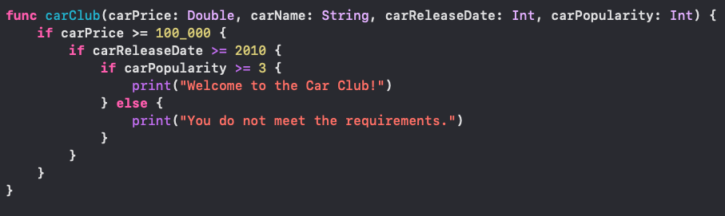
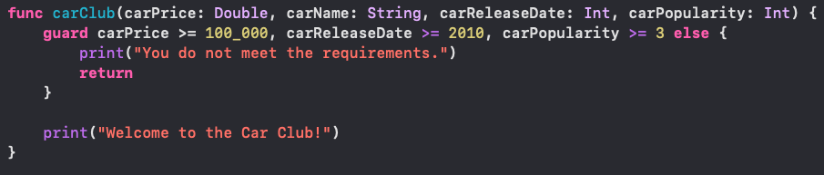
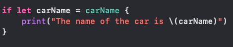

A Guard statement allows you to make your code look clearer and avoid many indentations that arise from using if-statements.
As you can see, the code does not look very clear as if it were to be written with a guard statement.
By using a guard-statement, the code is much easier to read and there are less indentations used.
In if-let statements, the optional value can only be used within the bracket. However, while using a guard-statement, the optional can be used outside of the bracket.
Guard-Statements provide the same functionality as if-statements, however, it can make the code more consise and easier to read.